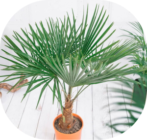
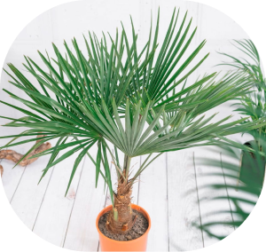

Форчуна
Компактная комнатная пальма трахикарпус Форчуна непременно обратит на себя внимание тех цветоводов, которые предпочитают экзотические растения. Ее эффектная крона может стать ярким украшением любого интерьера. Продолжительность жизни этой теплолюбивой пальмы в домашних условиях около 10–15 лет.
Внешний вид:
Такая эффектная веерная пальма получила свое название благодаря рассеченным листовым пластинам, которые собраны в кисти внешне похожие на веер. У взрослого трахикарпуса Форчуна, растущего в домашних условиях, подобная кисть в поперечнике может достигать от 0,6 до 0,8 м. В комнатной культуре листва у такого растения более узкая, однако при правильном уходе кисти вырастают пышными и эффектными. По завершению цветения, которое наблюдается в летнее время, на месте соцветий формируются большие ягодообразные плоды черного цвета.
Освещенность:
Палящие прямые солнечные лучи действуют на пальму губительно, тем более в летние жаркие дни. Однако если она будет стоять в затенении, то это приведет к замедлению ее роста. В связи с этим оптимальным вариантом для культуры является большое количество рассеянного солнечного света или место в небольшом затенении. Лучше всего куст будет себя чувствовать на западном или восточном подоконнике. Если же его поставить на окно, выходящее на юг, то ему следует обеспечить затенение от прямых лучей солнца.
Температурный режим:
Такая пальма предпочитает умеренное тепло. Если в комнате будет слишком жарко, то из-за этого растение может заболеть: его листва останавливает
рост и становится темной. В теплое время года оптимальная для него температура воздуха от 20 до 25 градусов. Комнатный трахикарпус летом
рекомендуется перенести на улицу, при этом занести его в комнату можно будет с наступлением первых холодов в осеннее время.
Данная эффектная пальма отличается от всех остальных тем, что она является самой устойчивой к морозам. В последние годы прошлого века был
зафиксирован исторический факт — трахикарпус уцелел после снижения температуры воздуха до минус 27 градусов.
Влажность воздуха:
Лучше всего растение себя чувствует при повышенной влажности (около 60 процентов). Такая пальма плохо реагирует на частые опрыскивания. Поэтому ее листву слегка увлажняют из пульверизатора 1 раз в 2 недели. В остальное время листовые пластины следует протирать увлажненной мягкой тряпкой. Если в комнате присутствуют работающие приборы отопления, то возле трахикарпуса рекомендуется разместить увлажнитель.
Полив:
Данная культура является устойчивым к засухе растением. При этом она крайне негативно реагирует на чрезмерно обильный полив. Растение поливают умеренно, следя за тем, чтобы в субстрате не застаивалась жидкость.
Полезные свойства:
Эффектная и довольно необычная пальма трахикарпус Форчуна известна тем, что она эффективно очищает воздух в помещении. При производстве большей
части мебели используется лаковое покрытие, которое способно испарять в воздух вредные вещества даже при незначительной температуре воздуха.
Растение поглощает не только вредные формальдегиды, но и соединения бензола и трихлорэтилена.
Острая кромка листовых пластин способствует ионизации воздуха, а еще это растение обогащает воздух кислородом. Специалисты советуют, украсить
таким растением жилую комнату для улучшения в ней микроклимата.
 
